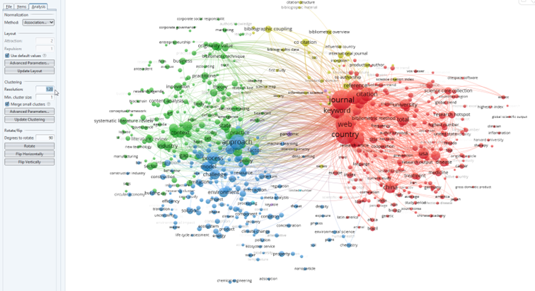

3.2 Creating an overview of topics
VOSviewer has a text analysis that lets you create topic overviews from a text file, for example of the title and abstract in the search results of a generic query. Let’s assume we look for potatoes, then VOSviewer will extract terms such as the different potato families, pests, genetic modification, et cetera from the overall text. By connecting the documents with the same terms (co-occurrence clustering), it will cluster terms in topics that you will be able to recognize, for example pesticides and food processing.The occurrence and age of the term give us information on the research that has been done into this topic.
In this case we think it may be interesting to check if there are common topics for which VOSviewer is used a lot. Therefore we do not do a generic search, but use the initial paper on VOSviewer as starting point. Everyone who uses VOSviewer in a publication, has to refer to that specific article. For your own research you may want to do a basic search in Web of Science and then continue with the export in step 5.
Go to Web of Science
Make sure the search settings are set to ‘Search in: Web of Science Core Collection’. The Core Collection is slightly smaller than all access to Web of Science, however it is the only collection with all information on article citations and therefore the best one to use for VOSviewer.
img
- We choose ‘Cited References’ and enter the DOI from the article as search term.
img
- Select the correct article and click ‘See results’. We now have 3.635 citing articles. Once you are doing this for a real research, please write down the number of results and copy the query link for your reference.
img
- Click on ‘Export’ and choose ‘Tab Delimited File’. Fill out the tab as follows:
img
TIP: you have to export in sets of 500 articles in this mode. So for this set we need 8 export files. Save the files in their own project directory together with the info on the search query.
- Now open VOSViewer, click ‘Create’ and choose ‘Create a map based on text data’.
img
Choose ‘Read data from bibliographic database files’ (there are many options here, including the ability to enter a list of doi identifiers and some limited search engine capabilities; in practice the database files created here are the most powerful source).
In the next window choose ‘Web of Science’ and select all of our files by clicking the first and last while holding down the shift button. Click next when you are done.
Select to use terms from both the title and the abstract. Leave the checkmarks as they are and click next.
img
- VOSviewer now extracts all terms from the title and abstract. Internally it uses a natural language processing AI to extract noun phrases (combinations of a noun with dependents, for example in ‘medical unit’ ‘medical’ is dependent upon the head noun ‘unit’). Next it will try to combine multiple and single phrases (‘medical units’). This technique only works in English as the algorithm does not know how to deal with other grammar. As it is based on grammar, the AI can’t connect abbreviations to written out terms.
The next question is about binary counting. This means per document a term will be counted as either in the document or not. As a term may be mentioned a lot in a single document, binary counting is usually the preferred setting.
- The minimum number of occurrences makes the difference between a too detailed map and a map you can use for visualization purposes. You may loose some very specific words, but I try to get the number of results down to 1000-2000. Choose next.
img
Leave number of terms as is and click next.
VOSviewer will now display a list of all terms together with a relevancy ranking.The relevancy ranking tries to find out if a term has a common or specific meaning. It does so by checking the co-occurrence patterns. If a phrase is only mentioned a lot in the introductory part of articles for example, it will be less relevant than a phrase that occurs all over the text. You can choose to leave a word out by unchecking the box if you thing it is of no use.
img
- For this quick analysis we simply click finish. We now get our first basic overview of the citing articles.
img
- You may notice there are three clusters. Two big ones and one smaller, less defined cluster. To get some insight, we note down the largest keywords from each cluster:
red: approach, process, challenge, context, model, environment, state, systematic literature review – seems to be on applications of the VOSviewer methodology for innovation
green: journal, keyword, country, citation, reference, university – seems to be on the specific use for ranking research(ers) and organizations
blue: originality value, co-citation, bibliographic coupling, bibliometric overview – not so clear cut, likely about research on methodologies for scientrometry.
- Personally I look at the results and think the clustering is a bit off. I can see many terms on environmental issues in the red cluster that may be a cluster on their own. Remember: clustering and visualization is a qualitative and not a quantitave analysis. The choices we have made for including articles, terms, etc. are all shown in the results. To improve my map, I choose to change the clustering so my environmental part is split of. To do this, go to the analysis tab and change the clustering parameters. Here I set resolution from 1 to 1.20 and updated the map.
 From the map I would now conclude there are four clusters which an expert could describe. I see research on using the VOSviewer methods for literature reviews and overviews for innovation and policies (green), applications for finding models/approaches in mainly the environmental sciences (blue), use in ranking of journals, countries and universities (red) and what looks like basic research for scientometric methods (yellow). In these cases it usually helps to check with an expert in the field.
In this specific analysis there may be less clear boundaries as we did not start from a general search but from articles referring to VOSviewer.
TIP: Sometimes the phrases are hard to read because they are overlapping. This may be solved by changing the display parameters to attraction=1 and repulsion=0
- To see what research is hot at the moment, we can use the publication information from our map. Switch to the ‘Overlay visualization’ tab and make sure the scores on the right are set to ‘Avg. pub.’ (meaning average date of publication).
Below the visualization you will notice a bar with a scale for the average publication year. The size of a phrase is determined by the number of publications, the color is the average age. Thus something that is large and blue, has been researched a lot in the past. You will notice that the pandemic has crept up as relatively new term (yellow) with still a small number of publications judging by the size of the dot: are there chances in this subtopic? Why is there such a large connection to country? (tip: check the term pandemic via a filter in your Web of Science query) Medicine is relatively blue and large, so the use of VOSviewer for rankings in this field may be something that has been researched in-depth already.
img
- With a density visualization (last tab) we can find the most important areas of research - at least if those terms are not all from the same papers. In this case VOSviewer seems to be mainly in use for ranking, with another focus point on the strategic – overview - use (concepts, state, approaches, challenges).
img